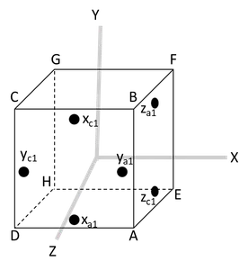

The robot has 6 degrees of freedom: 3 linear, 3 rotational
Robot Linear Motion
The robot moves by using 2 or 4 nozzles on the cube face ABCD and stops by using the opposite nozzles on cube face EFGH (not shown).
Robot Rotation

The robot can rotate along all 3 axes. To rotate clockwise along the x-axis, it uses nozzles xc1 on ABCD and xc2 on EFGH (not shown). Similarly for rotation along y- and z-axis.
Fuel Optimized Mode
In fuel optimized mode, the robot initiates movement with a small thrust, then coasts for most of the duration, before firing the opposite thrusters to stop the motion.
Speed Optimized Mode
In speed optimized mode, the robot doesn’t coast at all. Instead, it fires the forward thrusters for the first half of the motion and then fires the opposite thrusters to stop.